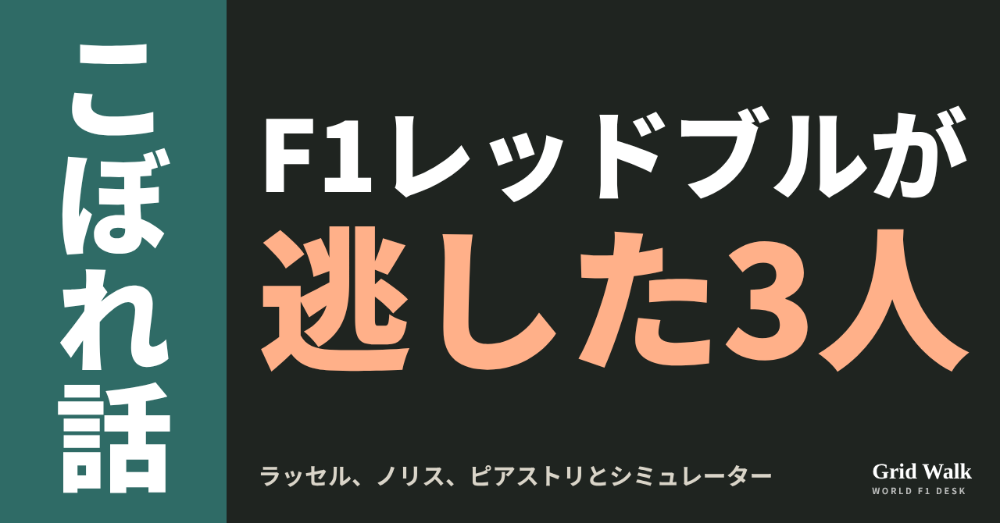
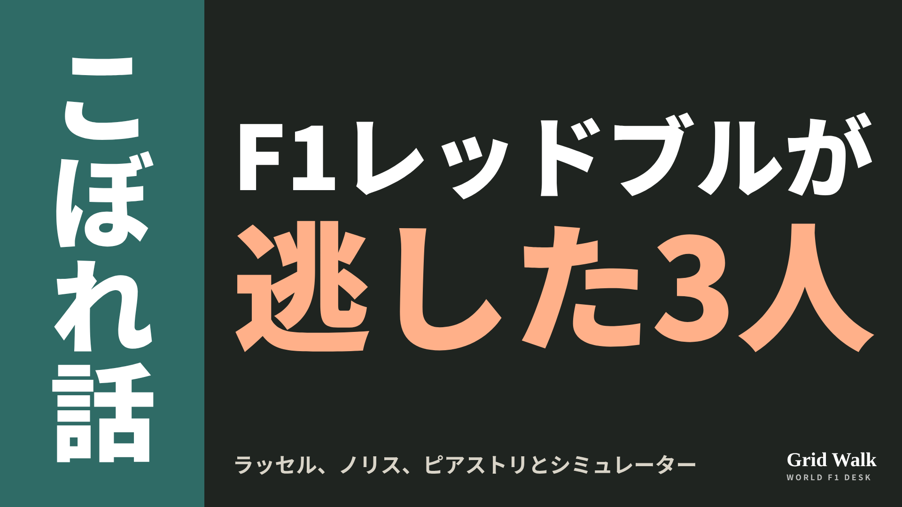

<meta charset="utf-8"><title>OFF GRID 6本 note貼り付け</title>
<style>
/* one column of numbered paste steps; text steps vs image steps differ by marker */
:root{--bg:#F5F4F0;--card:#FFFFFF;--ink:#1D2321;--mute:#5F665F;--line:#DCDAD2;--btn:#1F5FBF;--btnok:#2E8B4F;--img:#E9F3EC;--imgink:#22663B;--sans:'IBM Plex Sans JP','Hiragino Sans','Noto Sans JP',sans-serif}
@media (prefers-color-scheme:dark){:root:not([data-theme="light"]){--bg:#171A19;--card:#202423;--ink:#ECEDE8;--mute:#A3AAA2;--line:#343937;--btn:#4D8BE6;--btnok:#3FA866;--img:#1E2C23;--imgink:#8FD3A6;color-scheme:dark}}
:root[data-theme="dark"]{--bg:#171A19;--card:#202423;--ink:#ECEDE8;--mute:#A3AAA2;--line:#343937;--btn:#4D8BE6;--btnok:#3FA866;--img:#1E2C23;--imgink:#8FD3A6;color-scheme:dark}
body{background:var(--bg);color:var(--ink);font-family:var(--sans);font-size:15px;line-height:1.75;padding:20px 16px 60px}
main{max-width:680px;margin:0 auto;display:grid;gap:28px}
header h1{font-size:22px;margin:0 0 6px;text-wrap:balance}
header p{margin:0;color:var(--mute);font-size:14px}
nav{display:flex;gap:8px;flex-wrap:wrap;margin-top:12px}
nav a{border:1px solid var(--line);border-radius:999px;padding:4px 14px;color:var(--ink);text-decoration:none;font-size:14px;background:var(--card)}
.part h2{font-size:18px;line-height:1.5;margin:0 0 12px;text-wrap:balance;display:flex;gap:10px;align-items:baseline;flex-wrap:wrap}
.tag{font-size:13px;background:var(--ink);color:var(--bg);border-radius:6px;padding:1px 9px}
.steps{list-style:none;margin:0;padding:0;display:grid;gap:12px}
.st{background:var(--card);border:1px solid var(--line);border-radius:12px;padding:12px;min-width:0}
.hd{display:flex;align-items:center;gap:8px;margin-bottom:8px}
.no{width:26px;height:26px;border-radius:50%;background:var(--btn);color:#fff;display:inline-flex;align-items:center;justify-content:center;font-size:13px;font-weight:700;flex:0 0 26px}
.im .no{background:var(--btnok)}
.hd em{font-style:normal;font-size:12px;background:var(--img);color:var(--imgink);border-radius:6px;padding:0 8px}
.bx{font-size:13.5px;line-height:1.7;border:1px solid var(--line);border-radius:8px;padding:8px 10px;max-height:110px;overflow:auto;overflow-wrap:anywhere}
.bx.tall{max-height:150px}.bx p{margin:0 0 6px}.bx h2{font-size:14px;margin:8px 0 4px}.bx a{color:var(--btn)}
.st img{display:block;width:100%;max-width:100%;border:1px solid var(--line);border-radius:8px}
.sub{font-size:12.5px;color:var(--mute);margin:6px 0 0}
.cp{width:100%;margin-top:8px;padding:12px;border:0;border-radius:10px;background:var(--btn);color:#fff;font:600 15px var(--sans);cursor:pointer}
.cp.ok{background:var(--btnok)}.cp.dl{background:var(--btnok)}.cp:focus-visible{outline:3px solid var(--ink);outline-offset:2px}
.xh{font-size:15px;margin:20px 0 10px}
.fb{font-size:13px;line-height:1.7;margin:8px 0 0;padding:8px 10px;border-radius:8px;background:var(--img);color:var(--imgink)}
.opts{display:grid;grid-template-columns:repeat(auto-fill,minmax(240px,1fr));gap:10px}
.opt{min-width:0}.opt img{display:block;width:100%;border:1px solid var(--line);border-radius:8px}
.ol{display:flex;align-items:center;gap:8px;margin-top:6px}.ol b{font-size:13px;flex:0 0 auto}.ol .on{font-size:12.5px;color:var(--mute);flex:1;min-width:0}.ol .cp{width:auto;flex:0 0 auto;padding:9px 14px}.ol .cp{margin:0;padding:9px}
.toast{font-size:13px;color:var(--mute);margin-top:6px}
</style>
<main><header><h1>OFF GRID 6本 note貼り付け</h1><p>いま公開済みは1本です（1時間おきに増えます）。青い番号は文章、緑は画像です。</p><nav><a href="#p1">1</a></nav></header><section class="part" id="p1"><h2><span class="tag">OFF GRID</span>ホーナー「ラッセルがお金を払って」 レッドブルが逃した3人</h2><p class="sub">サイトに公開：21:57</p><ol class="steps">
<li class="st im"><div class="hd"><span class="no">1</span><b>見出し画像</b><em>画像</em></div><button class="cp dl" data-img="img/redbull-sim-customers-20261023.png" data-name="redbull-sim-customers-20261023_見出し画像.png">ダウンロード</button></li>
<li class="st"><div class="hd"><span class="no">2</span><b>タイトル</b></div><div class="bx" id="p1t">ホーナー「ラッセルがお金を払って」 レッドブルが逃した3人</div><button class="cp" data-plain="p1t">タイトルをコピー</button></li>
<li class="st"><div class="hd"><span class="no">3</span><b>本文</b></div><div class="bx tall" id="p1r"><p>若いころのラッセル、ノリス、ピアストリは、レッドブルのシミュレーターにお金を払って乗っていた――。レッドブルの元代表クリスチャン・ホーナーが、ポッドキャストでそう話しました。3人ともレッドブルの育成ドライバーにはならず、今はメルセデスとマクラーレンで走っています。アメリカGPのオースティンで、本人たちがこの話に答えました。</p><p>イギリス、オランダ、ドイツの元の記事へのリンクはサイトで → <a href="https://f1gridwalk.github.io/lens/redbull-sim-customers-20261023/?utm_source=note&amp;utm_campaign=redbull-sim-customers-20261023">https://f1gridwalk.github.io/lens/redbull-sim-customers-20261023/?utm_source=note&amp;utm_campaign=redbull-sim-customers-20261023</a></p><h2>「この子たちは、今のジュニアより上だ」</h2><p>ホーナーが話したのは、ポッドキャスト「High Performance」です（GPblog、F1 Oversteer）。</p><blockquote><p>「ジョージ・ラッセルがお金を払って、うちのシミュレーターに乗っていたのを覚えている。ランド・ノリスとオスカー・ピアストリもそうだった」（ホーナー、GPblog／オランダ）</p></blockquote><p>シミュレーターを見ていた担当者が、ホーナーのところに来てこう言ったそうです。</p><blockquote><p>「クリスチャン、この子たちは、今うちにいるジュニアより上だ」（ホーナーが振り返った担当者の言葉、GPblog／オランダ）</p></blockquote><p>ホーナーは3人を、当時レッドブルで若手ドライバーの育成を見ていたヘルムート・マルコに勧めたといいます。</p><blockquote><p>「ヘルムートに3人を紹介して、『いいかい、この子たちは本当に見ておくべきだと思う』と言ったのを覚えている」（ホーナー、Racing.nl／オランダ）</p></blockquote><p>ただ、ホーナー自身は「若手の育成プログラムの責任者だったことは一度もない」とも話しています（F1 Oversteer）。結局、3人ともレッドブルの育成には入りませんでした。ドイツのFormel1.deによると、ノリスとラッセルは2017年に、それぞれマクラーレンとメルセデスの育成に入っています。3人のその後について、ホーナーはこう話しています。</p><blockquote><p>「最後に誰にとってうまくいったか、見てのとおりだ」（ホーナー、GPblog／オランダ）</p></blockquote><h2>ノリス「マクラーレンに入るずっと前」</h2><p>アメリカGPを前にした木曜日の取材で、ノリスはこう答えました。</p><blockquote><p>「13歳くらいのころで、マクラーレンよりずっと前のことだよ。マクラーレンにいながら、よそのシミュレーターに乗るなんてできない」（ノリス、RacingNews365／イギリス）</p></blockquote><blockquote><p>「いろんなチームでやっていた。経験を積もうとしていたし、いろんな人から学んでいた」（同）</p></blockquote><blockquote><p>「あの年ごろは、できることをできるだけたくさんやるのが、何より大事なんだ」（同）</p></blockquote><p>ホーナーの話は「何も見ていないし、聞いてもいない」とのこと。シミュレーターに乗ったあと、どうなったかも「知らない」そうで、「何より自分の勉強のためだった」と話しています（同）。</p><h2>ラッセル「2013年当時、どこも持っていなかった」</h2><blockquote><p>「2013年当時、シミュレーターは誰にとっても当たり前のものじゃなかった。下のカテゴリーのチームは、シミュレーターを持っていなかった」（ラッセル、RacingNews365／イギリス）</p></blockquote><p>そこで、レッドブルのシミュレーターで、フォーミュラ・ルノーの車を走らせる機会があったといいます。目的は「テストや、出ていたシリーズのレースに向けた準備」でした（同）。</p><blockquote><p>「どのチームも持っていなかったからね。話はそれだけだよ」（同）</p></blockquote><p>Motorsport.comによると、ラッセルは「言えるのはそれだけ」とも話しています。ピアストリ本人のコメントは、今回の各メディアの記事には出ていません。</p><p>編集部としては、「逃した3人」の話であると同時に、シミュレーターを持たない下のカテゴリーの若手が、F1チームの設備で練習の場を探していたころの話としても読めると見ています。</p><p><strong>もしあの時レッドブルが3人のうち誰かと契約していたら、今のF1はどうなっていたと思いますか？</strong></p><p>━━━━━━━━━━</p><p><strong>F1 Grid Walk では、世界のF1ニュースを毎日日本語でまとめています。</strong></p><p>海外の記事の要約を、毎日載せています。</p><p><a href="https://f1gridwalk.github.io/">https://f1gridwalk.github.io/</a></p><p>ほかの海外記事も読みたい方は、F1 Grid Walkへ。</p><p><a href="https://f1gridwalk.github.io/lens/redbull-sim-customers-20261023/">https://f1gridwalk.github.io/lens/redbull-sim-customers-20261023/</a></p><p>━━━━━━━━━━</p><p><a href="https://racingnews365.com/lando-norris-and-george-russell-offer-clarity-over-red-bull-simulator-outings">出典：RacingNews365（イギリス）</a></p><p><a href="https://www.gpblog.com/en/news/red-bull-had-russell-norris-and-piastri-in-their-hands-and-let-all-three-slip-away">出典：GPblog（英語版）（オランダ）</a></p><p><a href="https://www.gpblog.com/en/news/george-russell-and-lando-norris-address-christian-horners-red-bull-simulator-claim">出典：GPblog（英語版）（オランダ）</a></p><p><a href="https://racing.nl/formule-1/george-russell-reageert-op-de-simulator-claim-van-christian-horner-meer-zeg-ik-er-niet-over">出典：Racing.nl（オランダ）</a></p><p><a href="https://www.formel1.de/news/news/2026-10-23/norris-piastri-russell-wie-red-bull-drei-f1-stars-durch-die-lappen-gingen">出典：Formel1.de（ドイツ）</a></p><p><a href="https://www.f1oversteer.com/news/helmut-markos-brutal-reaction-to-seeing-george-russell-and-lando-norris-on-red-bull-simulator/">出典：F1 Oversteer（イギリス）</a></p><p><a href="https://sports.yahoo.com/articles/george-russell-responds-christian-horners-223656412.html">出典：Motorsport.com（Yahoo Sports掲載）（イギリス）</a></p></div><button class="cp" data-rich="p1r">本文をコピー</button></li>
<li class="st"><div class="hd"><span class="no">4</span><b>ハッシュタグ</b></div><div class="bx" id="p1h">#F1 #F1jp #アメリカGP #ラッセル #ノリス #ピアストリ #レッドブル #ホーナー #F1こぼれ話 #OFFGRID</div><button class="cp" data-plain="p1h">タグをコピー</button></li>
</ol><h3 class="xh">X</h3><ol class="steps">
<li class="st im"><div class="hd"><b>X用の画像</b><em>画像</em></div><button class="cp dl" data-img="img/x_redbull-sim-customers-20261023.png" data-name="x_redbull-sim-customers-20261023.png">ダウンロード</button></li>
<li class="st"><div class="hd"><b>① noteをシェアするときの文</b></div><div class="bx" id="p1x0">レッドブルの元代表ホーナーが、若いころのラッセル、ノリス、ピアストリはお金を払ってレッドブルのシミュレーターに乗っていた、とポッドキャストで話しました。オースティンでの本人たちの答えとあわせて、noteにまとめました #F1jp #F1こぼれ話</div><button class="cp" data-plain="p1x0">コピー</button></li>
<li class="st"><div class="hd"><b>② ①への返信</b></div><div class="bx" id="p1x1">ほかの海外記事も読みたい方は、F1 Grid Walkへ。
https://f1gridwalk.github.io/lens/redbull-sim-customers-20261023/?utm_source=x&amp;utm_campaign=redbull-sim-customers-20261023</div><button class="cp" data-plain="p1x1">コピー</button></li>
<li class="st"><div class="hd"><b>③ ②への返信</b></div><div class="bx" id="p1x2">毎日の海外F1ニュースは、日本語でこちらにまとめています。
https://f1gridwalk.github.io/</div><button class="cp" data-plain="p1x2">コピー</button></li>
</ol></section></main><script>
function done(b,msg){const t=b.dataset.t||b.textContent;b.dataset.t=t;b.classList.add('ok');b.textContent=msg||'コピーしました';setTimeout(()=>{b.classList.remove('ok');b.textContent=t},2000)}
function selectEl(el){const r=document.createRange();r.selectNodeContents(el);const s=getSelection();s.removeAllRanges();s.addRange(r)}
async function rich(el,b){
  try{await navigator.clipboard.write([new ClipboardItem({'text/html':new Blob([el.innerHTML],{type:'text/html'}),'text/plain':new Blob([el.innerText],{type:'text/plain'})})]);done(b);return}catch(e){}
  selectEl(el);let ok=false;try{ok=document.execCommand('copy')}catch(e){}
  if(ok){getSelection().removeAllRanges();done(b)}else{done(b,'選択しました。コピーしてください')}}
async function plain(el,b){
  try{await navigator.clipboard.writeText(el.innerText);done(b);return}catch(e){}
  selectEl(el);let ok=false;try{ok=document.execCommand('copy')}catch(e){}
  if(ok){getSelection().removeAllRanges();done(b)}else{done(b,'選択しました。コピーしてください')}}
let dlns=null;(async()=>{try{dlns=await window.claude?.use?.("downloads")}catch(e){dlns=null}})();
async function img(src,b){
  b.dataset.t=b.dataset.t||b.textContent;
  if(!dlns){try{dlns=await window.claude?.use?.("downloads")}catch(e){}}
  if(!dlns){b.textContent='ダウンロードできませんでした';setTimeout(()=>{b.textContent=b.dataset.t},3500);return}
  try{const blob=await fetch(src).then(r=>r.blob());b.textContent='保存の確認を開いています…';
    await dlns.save({filename:b.dataset.name,data:blob});done(b,'ダウンロードしました')}
  catch(e){const c=e&&e.code;b.textContent=c==='declined'?'キャンセルしました':c==='rate_limited'?'少し待ってからもう一度押してください':'ダウンロードできませんでした';setTimeout(()=>{b.textContent=b.dataset.t},3500)}}
document.querySelectorAll('.cp').forEach(b=>b.addEventListener('click',()=>{
  if(b.dataset.rich)rich(document.getElementById(b.dataset.rich),b);
  else if(b.dataset.plain)plain(document.getElementById(b.dataset.plain),b);
  else img(b.dataset.img,b)}));
</script>